Creativity
Students are encouraged to express ideas, imagine solutions and participate in creative activities.
CBSE Education • Hippocampus Model • 21st-Century Learning
Shri Prabhulingeshwar International School, Chimmad brings a structured CBSE learning environment supported by the Hippocampus school model. The school focuses on strong academics, reading fluency, values, scientific inquiry, computational thinking, student support and future exam readiness.
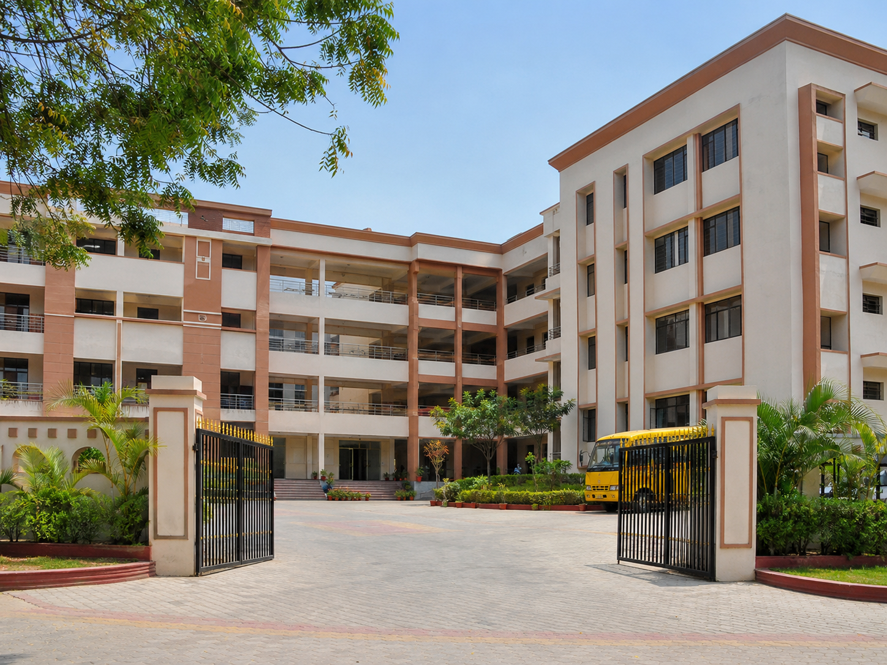
Learning Model
The campus learning model highlights academic planning, reading programmes, teacher development, R&D support, clubs, houses, reviews and exam preparation.
About Our School
The school campus communication presents a clear promise: international learning is now available in our school. The learning model is designed to empower students through a cutting-edge curriculum, global perspectives, character development, values, social responsibility and practical life skills.
The school is associated with the Hippocampus school model. The campus board mentions a robust network of 6 CBSE schools and 10 State Board schools serving more than 6000 children. The academic framework is organised around a three-pronged approach: Knowledge, Behaviours and Competencies.
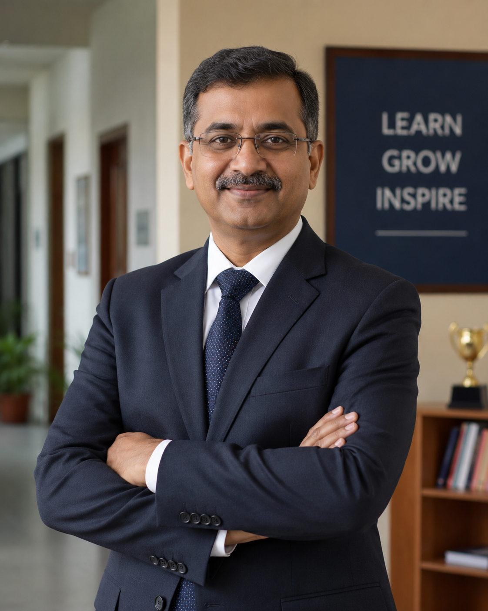
Leadership
This website version uses a dummy representative photo for the Principal / Head of Institution section. It is meant only as a placeholder until the official school photograph is available.
Our academic leadership is committed to building a disciplined, student-centred and future-ready school environment. The focus is on strong academics, values, reading habits, teacher support, joyful learning and all-round student development.
Replace this dummy image and text with the actual Principal’s photograph, designation, qualifications and official message before final publication.
The KBC Approach
The KBC approach prepares children for the 21st century by strengthening three important areas: academic knowledge, responsible behaviours and practical competencies. The school aims to go beyond marks by building confidence, discipline, social awareness, values and problem-solving abilities.
Children learn through direct instruction, activity-based learning and inquiry-based learning, giving them both clarity and curiosity.
21st-Century Skills
The campus boards highlight competencies that prepare children for the future. These skills are developed through classroom activities, projects, clubs, events, houses and guided student participation.
Students are encouraged to express ideas, imagine solutions and participate in creative activities.
Students learn to analyse, reason, ask questions and solve problems.
Group work, events and house activities build teamwork and shared responsibility.
Students receive opportunities to speak, present, discuss and express themselves confidently.
Activities connect children with society and help them develop social responsibility.
Students learn to respect culture, heritage and diversity through school programmes.
Values, empathy and responsible conduct are developed through daily school culture.
Students are encouraged to pursue deeper understanding and disciplined academic effort.
Academic Programmes
Each stage has specific learning goals, activity design, review systems and support programmes so that children move ahead with confidence.
The kindergarten programme is activity-based and makes school a second home for children. It focuses on six critical competencies: language development, cognitive development, physical and motor development, creative expression, pre-math and math readiness, and socio-emotional development.
It also focuses on warmth, care, comfort and recognising the unique potential of every child through interactive, personalised learning plans.
Middle grades are treated as a time of exploration, learning and leadership. Students are kept engaged through academics, events, clubs and sports. Continuous unit-end reviews help track progress and keep children focused.
Students get opportunities to showcase talent through competitions, events and house-based activities that build team spirit, confidence and leadership.
The secondary programme focuses on board-exam readiness and success beyond the classroom. It includes remedials and honours programmes, expert teachers, counselling sessions, structured revision programmes and AI-based math support.
The school also promotes strong work ethics, discipline, progress tracking and preparation for future academic goals.
Kindergarten @ Hippocampus
The kindergarten programme helps young children discover the magic of learning. The campus board describes early education as a second home where children feel secure, happy and confident.
Learning is not limited to books. Children explore through activity, movement, expression, conversation, play and guided classroom routines.
Future-Ready Learning
Future-ready learning begins early. Science and art weeks are integrated into kindergarten programmes, giving children diverse learning opportunities. Computational thinking starts from Grade 1 so students begin tackling analytical problems from an early age.
Mathematics practice is strengthened through adaptive and gamified learning support. Students are also exposed to scientific inquiry through year-round science activities and well-equipped composite labs. The school provides foundation support for Navodaya, CET and NEET examinations.
Reading Culture
The reading programme ensures that every child develops a love for books, improves fluency and builds comprehension. The school encourages reading every day and supports children through structured reading systems.
All children read every day, on all days of the week. This introduces children to the magic of reading and lays the foundation for a lifelong love for books.
This programme focuses on decoding skills in Grade 1 and helps children become confident readers at an early stage.
Special reading activities help children discover the joy of books and become joyful readers for life.
At the beginning of the year, bridge programmes help children overcome learning difficulties and settle into the academic plan.
The library and reading programme helps children track their own reading level and take steps to become more fluent readers.
Well-furnished libraries become gateways to imagination and curiosity. Regular reading comprehension exercises build strong understanding for senior years.
Experience Leads to Excellence
The school places strong importance on developing excellent teachers and grooming principals to become inspirational leaders. Teachers are recruited through a stringent process, trained with needed resources and supported throughout the year.
Academic leadership is considered essential for achieving excellence. Principals undergo continuous professional development and monthly performance assessments so that the school can improve systematically.
Our Staff
This section uses a dummy Indian staff group photograph to visually represent the school’s team. It can later be replaced with official school staff photos.
Our staff includes trained teachers, coordinators and support teams who work together to provide a caring, organised and academically strong learning environment for every child.
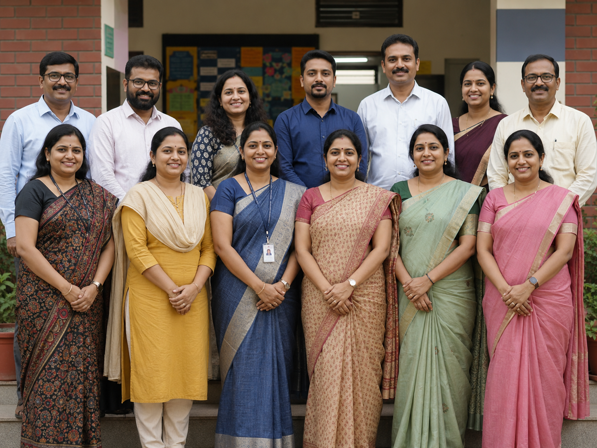
Quality Monitoring
The campus material shows a performance-driven system where teachers and school processes are reviewed periodically. The focus is not only on classroom teaching but also on reading habits, digital culture, transport, events and parent engagement.
Professionalism, classroom management, student engagement, differentiated learning and teaching methods are reviewed for improvement.
Development of reading habits, lesson execution, assessment readiness and student engagement are supported through structured academic systems.
Transport maintenance, teacher vacancy tracking, digital culture, school events and parent engagement are treated as important parts of school quality.
Middle Grades
Middle grade students need engagement, review and opportunities. The school balances academics with clubs, sports, events and house activities.
Academics, events, clubs and sports give children opportunities to explore, learn and lead.
Short and frequent reviews keep students focused and help teachers track progress.
Clubs such as design thinking and digital journalism support personality development.
Regular competitions and events help children showcase their talent and confidence.
House activities strengthen school spirit, leadership, healthy competition and teamwork.
Students get structured opportunities to grow beyond textbooks and develop confidence.
Students learn to take responsibility through events, clubs and house participation.
Reviews and classroom observation help the school support each child’s progress.
Secondary Grades 9/10
The secondary programme is designed to empower students for success beyond the classroom. It focuses on strong work ethics, academic intervention, mentoring, expert teaching and exam preparedness.
The campus board highlights remedials and honours support, structured revision, counselling, expert teachers and AI-based math support to help every level of learner progress.
Trust / Management
This section includes a dummy Indian trust / management group photo for website presentation. It represents the institution’s governing body, trust members or management committee.
The trust and management are responsible for guiding the institution’s mission, supporting quality education, strengthening infrastructure and ensuring long-term development of the school.
Replace this dummy photo with the real trust or management photograph and update the names, roles and official designations.
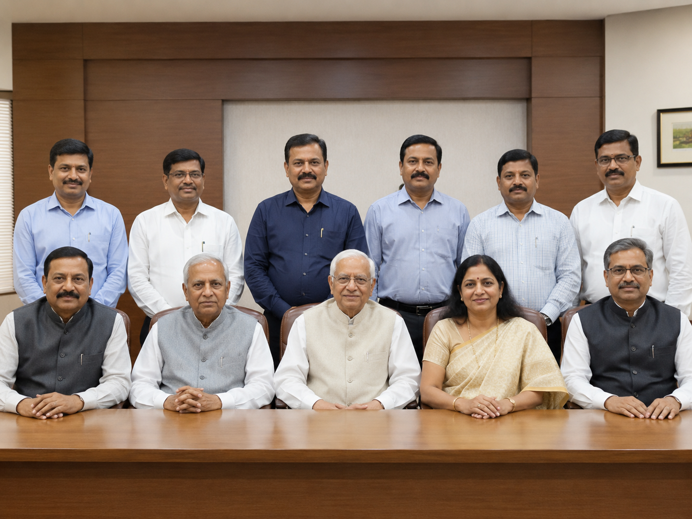
Campus Infrastructure
The images below are dummy representative photos created for the website design. They show Indian-style campus infrastructure and academic spaces, and can later be replaced with actual school photographs.
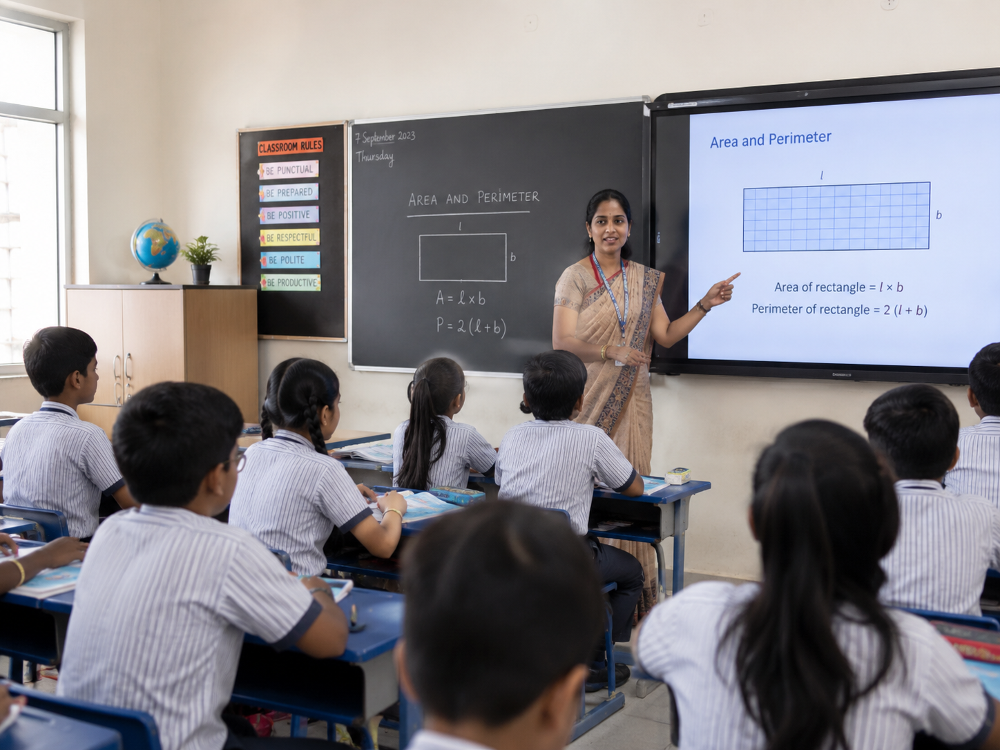
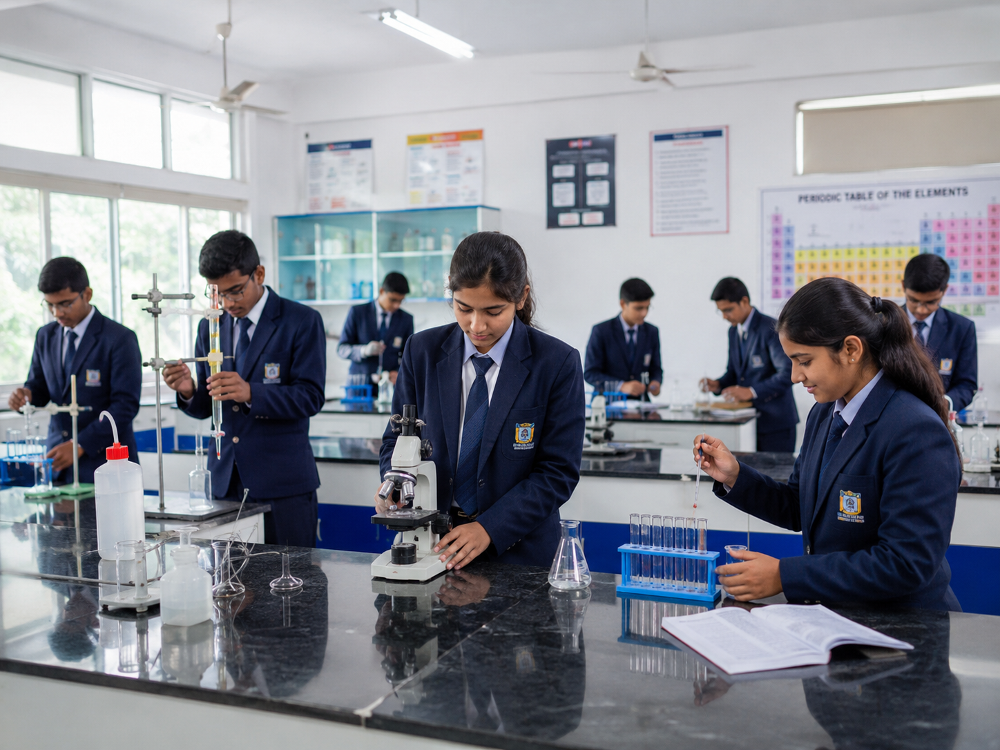
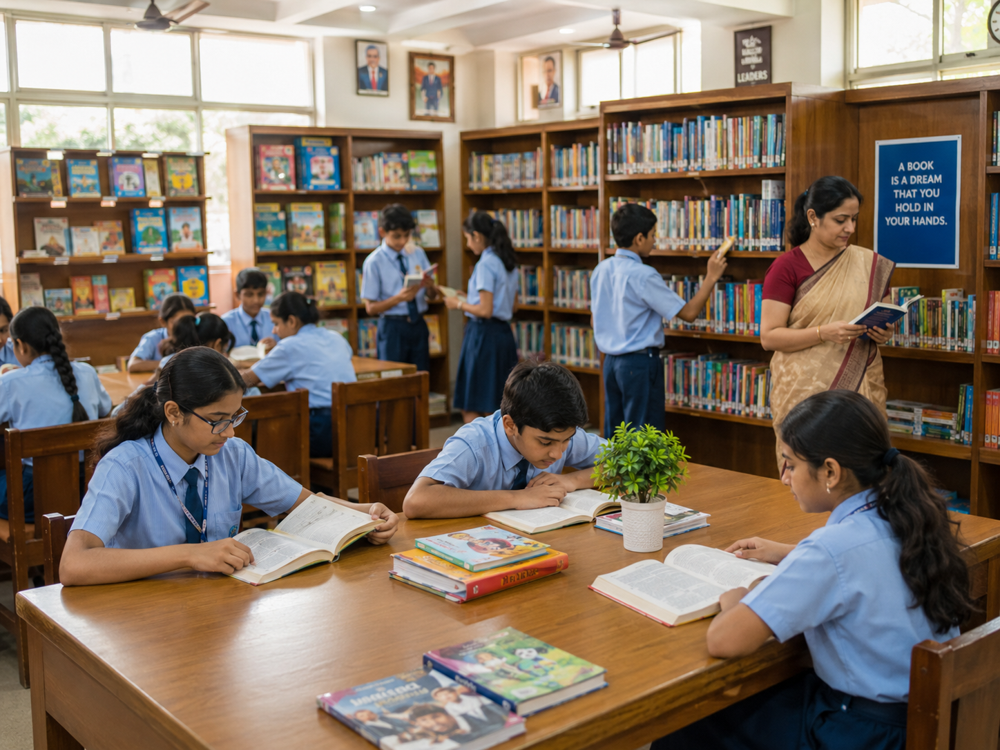
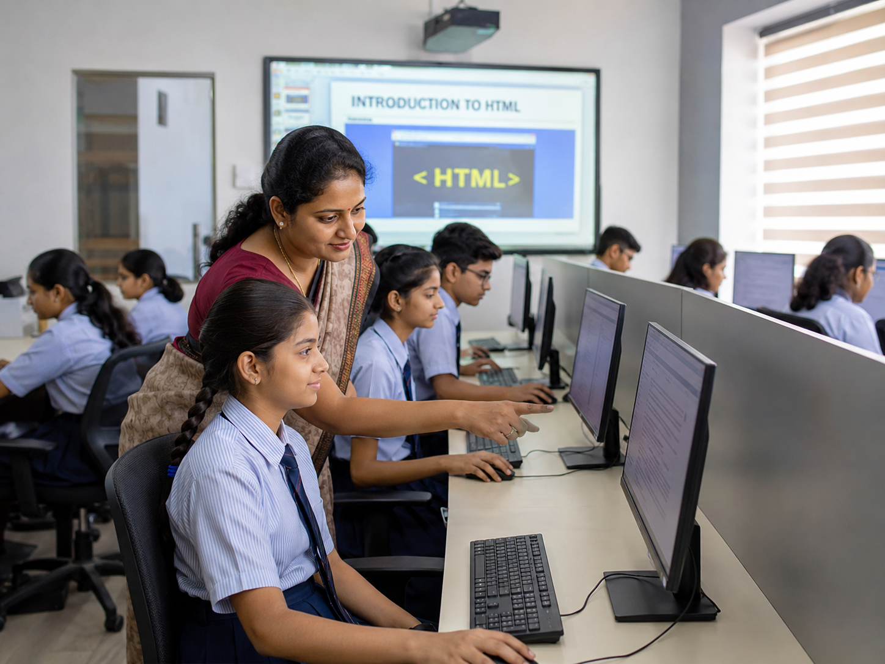
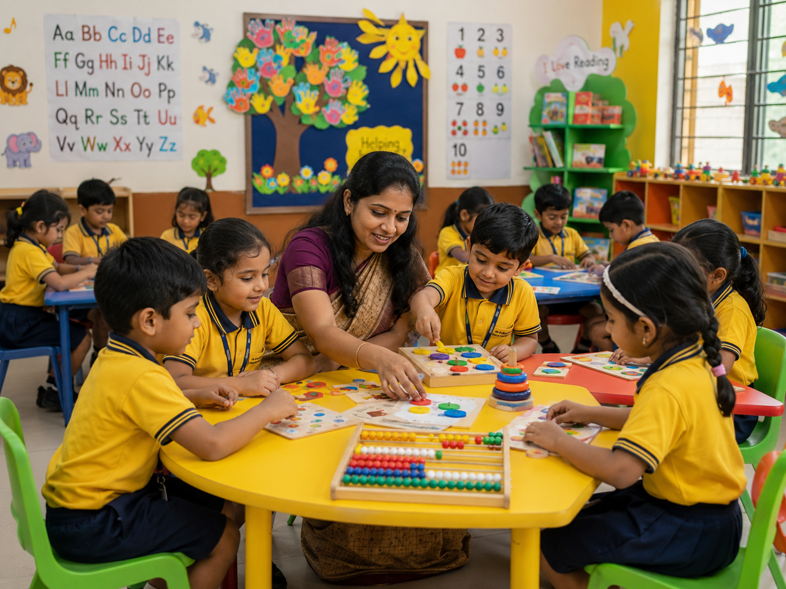
Content Verification
The campus posters you shared have already been used as content sources. Their information has been extracted and incorporated into the relevant website sections instead of relying only on poster images.
About the School, KBC Approach, Academic Programmes, Kindergarten, Future-Ready Learning, Reading Culture, Teachers & R&D Support, Middle Grades, Secondary Grades and Management.
DEAR, English Star Phonics, GROWBY Reading, Bridge Programmes, 21st-century skills, computational thinking, science and art weeks, Navodaya/CET/NEET foundation, teacher development and student support.
The duplicate “Original campus posters and information boards” display has been removed from the website, and a separate modern gallery page with lightbox has been added for the dummy/generated photos.
Photo Gallery
A separate gallery page now showcases all dummy and generated photos with a lightbox view for a better browsing experience.
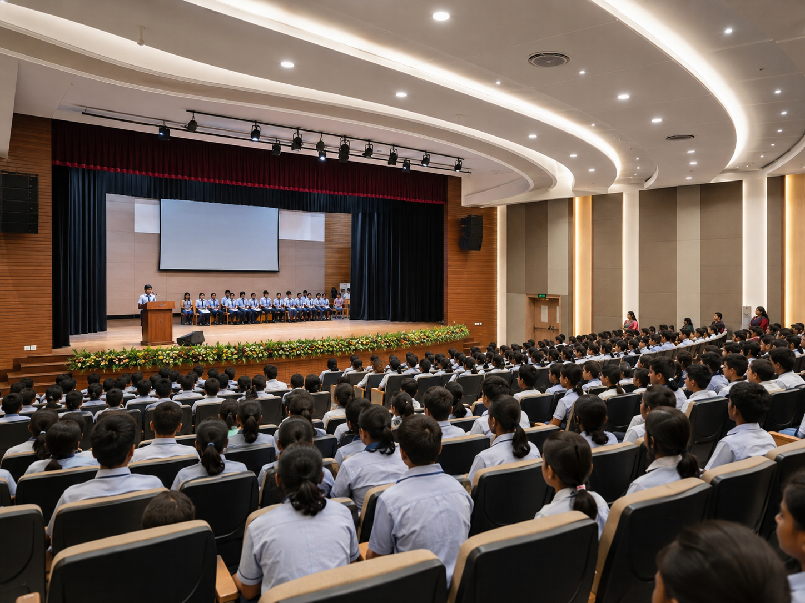
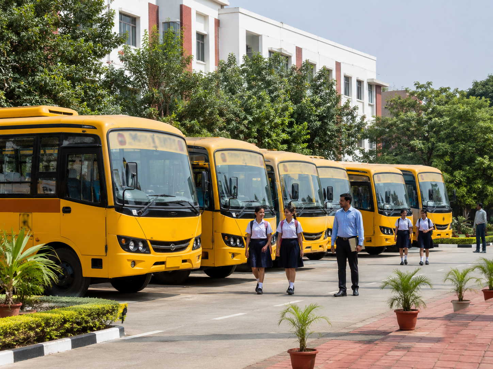
CBSE Section
Important: replace all sample values and upload self-attested documents in the docs/ folder before making the website live.
| Sl. No. | Information | Details |
|---|---|---|
| 1 | Name of the School | Shri Prabhu Lingeshwar International School |
| 2 | Affiliation No. | To be updated |
| 3 | School Code | To be updated |
| 4 | Complete Address with PIN Code | To be updated |
| 5 | Principal Name & Qualification | To be updated |
| 6 | School Email ID | info@splischool.in |
| 7 | Contact Details | +91 99999 99999 |
| Sl. No. | Document / Information | Uploaded Document |
|---|---|---|
| 1 | Affiliation / Upgradation Letter and Extension of Affiliation | View PDF |
| 2 | Society / Trust / Company Registration Certificate | View PDF |
| 3 | No Objection Certificate (if applicable) | View PDF |
| 4 | Recognition Certificate under RTE Act | View PDF |
| 5 | Building Safety Certificate | View PDF |
| 6 | Fire Safety Certificate | View PDF |
| 7 | DEO Certificate / Self Certification | View PDF |
| 8 | Water, Health & Sanitation Certificates | View PDF |
| Sl. No. | Document / Information | Uploaded Document |
|---|---|---|
| 1 | Fee Structure of the School | View PDF |
| 2 | Annual Academic Calendar | View PDF |
| 3 | List of School Management Committee (SMC) | View PDF |
| 4 | List of Parents Teachers Association (PTA) Members | View PDF |
| 5 | Last three-year Board Examination Result | View PDF |
| Sl. No. | Information | Details |
|---|---|---|
| 1 | Principal | 1 |
| 2 | Total No. of Teachers | To be updated |
| 3 | PGT | To be updated |
| 4 | TGT | To be updated |
| 5 | PRT | To be updated |
| 6 | Teacher Section Ratio | To be updated |
| 7 | Special Educator | To be updated |
| 8 | Counsellor and Wellness Teacher | To be updated |
| Sl. No. | Information | Details |
|---|---|---|
| 1 | Total Campus Area | To be updated |
| 2 | No. and Size of Class Rooms | To be updated |
| 3 | No. and Size of Laboratories | To be updated |
| 4 | No. of Girls Toilets | To be updated |
| 5 | No. of Boys Toilets | To be updated |
| 6 | Link of YouTube video of the inspection of school covering the infrastructure | Add YouTube Link |
Admissions
Admissions are open for parents seeking a school environment where learning is enjoyable, skills are sharp and success is built through consistent academic and personal development.
Contact